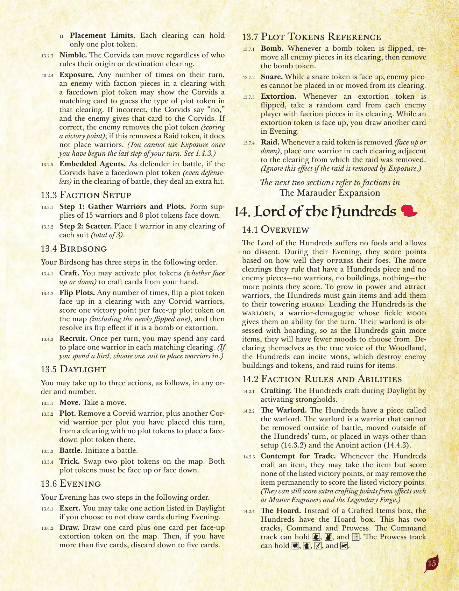
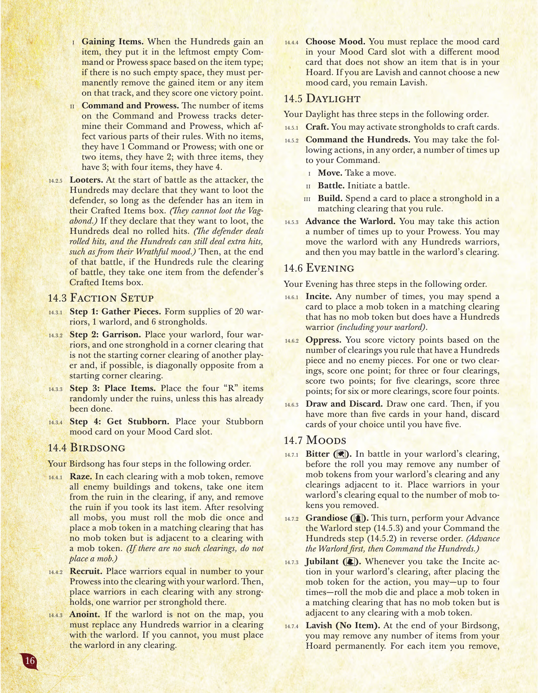
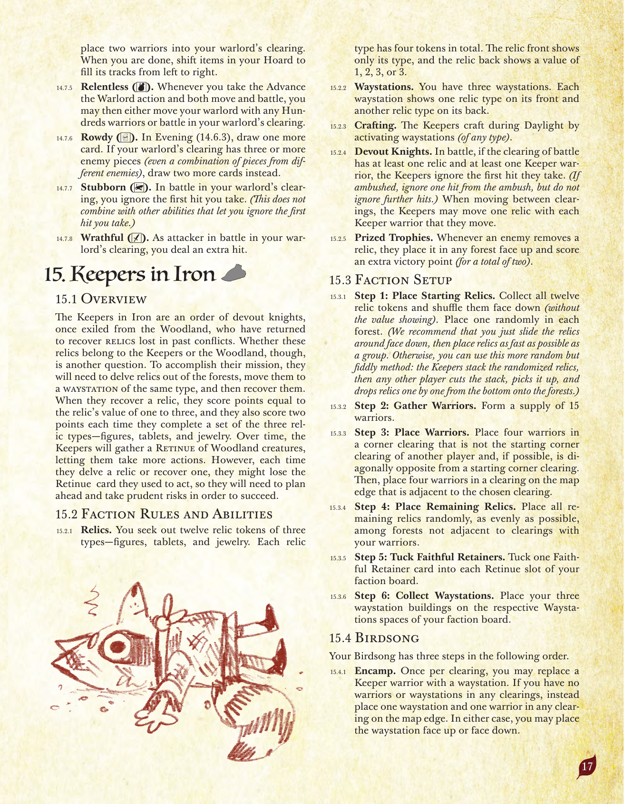
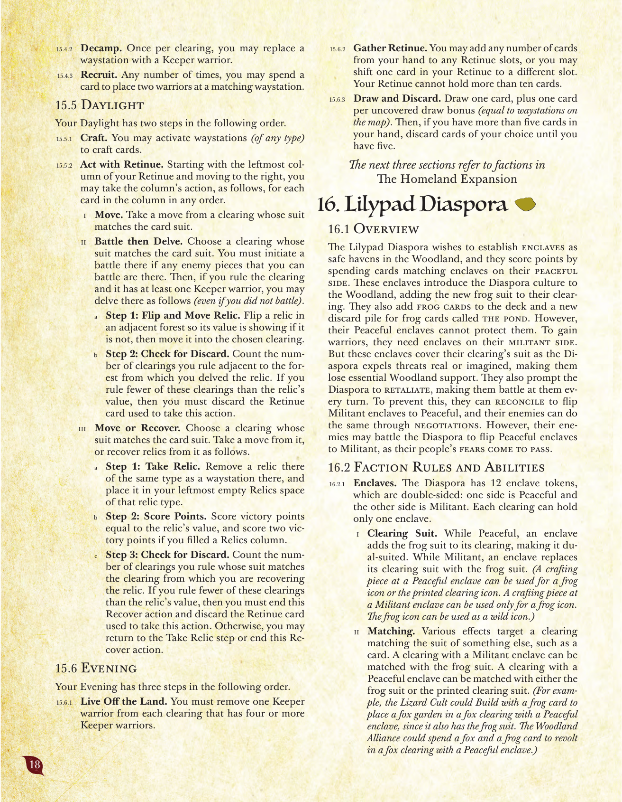

宝の拡張：百獣王国・甲鉄衛団
原題: The Marauder Expansion／『根の法典』第14〜15章。日本語版は「ルート 拡張 〜みはてぬ宝のあらもの騒記〜」としてArclightGamesより発売されている。
14. 百獣王国
14.1 概要
百獣王国は愚か者を許さず、異論を認めない。夕闇フェイズの間、彼らは敵をどれだけうまく圧政下に置いたかに基づいて得点する。百獣の駒があり、かつ敵の駒が――兵士も建物も何も――ない開拓地を支配しているほど、より多くの点を得る。力を増し兵士を引き入れるため、百獣王国はアイテムを獲得し、それをそびえる宝の山に加えなければならない。百獣王国を率いるのは覇王、気まぐれな気分によってそのターンの能力が決まる、戦士にして大衆扇動家である。覇王は蓄財にこだわるため、百獣王国がアイテムを多く獲得するほど、選べる気質は少なくなっていく。森の真の声であると自称する百獣王国は、暴徒を煽動して敵の建物やトークンを破壊させ、アイテムを求めて廃墟を襲撃できる。
14.2 派閥固有のルールと能力
- クラフト。 百獣王国は昼光フェイズ中、要塞を発動することでクラフトする。
- 覇王。 百獣王国は「覇王」と呼ばれる駒を持つ。覇王は兵士であり、戦闘以外で除去されることはなく、百獣王国のターン以外で移動することはなく、準備（14.3.2）と「任命」アクション（14.4.3）以外の方法で配置されることもない。
- 商売蔑視。 百獣王国がアイテムをクラフトするときはいつでも、そのアイテムを取得して記載された勝利点を一切得ないか、またはそのアイテムを永久に除去して記載された勝利点を得るかを選べる。（「精密技師」や「伝説の鍛冶場」のような効果による追加のクラフト得点は通常どおり得られる。）
- 財宝庫。 「クラフトしたアイテム」の枠の代わりに、百獣王国は「財宝庫」枠を持つ。これには「統率」と「武勇」の2つのトラックがある。統率トラックは靴・革袋・弩を保持できる。武勇トラックは槌・茶・剣・硬貨を保持できる。
- アイテムの獲得。 百獣王国がアイテムを獲得した場合、そのアイテムの種類に応じて、統率または武勇トラックの一番左の空いている枠に置く。そのような空いている枠がない場合、獲得したアイテムまたはそのトラック上の任意のアイテムを永久に除去しなければならず、その場合勝利点を1点獲得する。
- 統率と武勇。 統率・武勇トラック上のアイテムの数によって、それぞれの統率値・武勇値が決まり、これがルールの様々な部分に影響する。アイテムが0個なら統率（または武勇）は1。アイテムが1個または2個なら2。3個なら3。4個なら4。
- 略奪者。 攻撃側として戦闘を開始する際、防御側の「クラフトしたアイテム」の枠にアイテムが1つでもある限り、百獣王国は防御側から略奪したいと宣言できる（放浪部族から略奪することはできない）。略奪したいと宣言した場合、百獣王国はロールによるヒットを与えない（防御側はロールによるヒットを与え、百獣王国は「憤怒」の気質などによる追加ヒットを引き続き与えることができる）。その後、その戦闘の終了時に百獣王国がその戦闘の開拓地を支配していれば、防御側の「クラフトしたアイテム」の枠からアイテムを1つ取る。
14.3 派閥固有の準備手順
- ステップ1：駒の準備。 兵士20個、覇王1個、要塞6個の供給を用意する。
- ステップ2：駐留。 他のプレイヤーの開始隅開拓地ではなく、可能であれば他のプレイヤーの開始隅開拓地と対角になる隅の開拓地に、覇王・兵士4体・要塞1つを置く。
- ステップ3：アイテムの配置。 まだ行われていない場合、4つの「R」付きアイテムをランダムに各廃墟の下に置く。
- ステップ4：頑固になる。 「頑固」の気質カードを自分の気質カード枠に置く。
14.4 鳥歌フェイズ
鳥歌フェイズには、以下の順で4つのステップがある。
- 破壊。 暴徒トークンのある各開拓地で、すべての敵の建物とトークンを除去し、そこにある廃墟（あれば）からアイテムを1つ取り、最後のアイテムを取った場合はその廃墟を除去する。すべての暴徒を解決した後、暴徒ダイスを1回振り、暴徒トークンのない、暴徒トークンのある開拓地に隣接する一致する開拓地に暴徒トークンを1つ置かなければならない。（そのような開拓地がなければ暴徒は配置しない。）
- 徴募。 自分の武勇値に等しい数の兵士を、覇王のいる開拓地に置く。その後、要塞のある各開拓地に、要塞1つにつき兵士を1体ずつ置く。
- 任命。 覇王が地図上にいない場合、いずれかの開拓地にいる百獣王国の兵士を覇王と置き換えなければならない。それができない場合は、任意の開拓地に覇王を配置しなければならない。
- 気質の選択。 自分の気質カード枠にある気質カードを、自分の財宝庫にあるアイテムを示していない別の気質カードに置き換えなければならない。「豪奢」であり新しい気質カードを選べない場合は、「豪奢」のままでよい。
14.5 昼光フェイズ
昼光フェイズには、以下の順で3つのステップがある。
- クラフト。 要塞を発動して、カードをクラフトしてよい。
- 百獣の統率。 自分の統率値までの回数、以下のアクションを任意の順序で行ってよい。
- 移動。 移動を1回行う。
- 戦闘。 戦闘を開始する。
- 建設。 カードを1枚消費して、自分が支配する一致する開拓地に要塞を1つ配置する。
- 覇王の進軍。 自分の武勇値までの回数、このアクションを行ってよい。覇王を、任意の数の百獣王国の兵士とともに移動させ、その後、覇王のいる開拓地で戦闘を行ってよい。
14.6 夕闇フェイズ
夕闇フェイズには、以下の順で3つのステップがある。
- 煽動。 何度でも、カードを1枚消費して、暴徒トークンのない、百獣王国の兵士（覇王を含む）がいる一致する開拓地に暴徒トークンを1つ置いてよい。
- 圧政。 百獣王国の駒があり敵の駒がない開拓地を支配している数に基づいて勝利点を得る。1〜2開拓地なら1点、3〜4開拓地なら2点、5開拓地なら3点、6開拓地以上なら4点を得る。
- カードを引いて捨てる。 カードを1枚引く。その後、手札が5枚を超えている場合は、5枚になるまで好きなカードを捨てる。
14.7 気質
- 辛辣（槌）。 覇王のいる開拓地での戦闘で、ロールの前に、覇王のいる開拓地とそれに隣接する開拓地から任意の数の暴徒トークンを除去してよい。除去した暴徒トークンの数に等しい数の兵士を、覇王のいる開拓地に置く。
- 尊大（茶）。 このターン、「覇王の進軍」ステップ（14.5.3）と「百獣の統率」ステップ（14.5.2）を逆の順序で行う。（覇王の進軍を先に、その後百獣の統率を行う。）
- 歓喜（靴）。 覇王のいる開拓地で「煽動」アクションを行うときはいつでも、そのアクションのために暴徒トークンを置いた後、最大4回まで、暴徒ダイスを振り、暴徒トークンのない、暴徒トークンのある任意の開拓地に隣接する一致する開拓地に暴徒トークンを置いてよい。
- 豪奢（アイテムなし）。 自分の鳥歌フェイズの終了時、自分の財宝庫から任意の数のアイテムを永久に除去してよい。除去したアイテム1つにつき、覇王のいる開拓地に兵士を2体置く。終わったら、財宝庫内のアイテムを左詰めにしてトラックを詰める。
- 冷徹（革袋）。 「覇王の進軍」アクションを行い、移動と戦闘の両方を行うときはいつでも、その後さらに覇王を任意の百獣王国の兵士とともに移動させるか、覇王のいる開拓地で戦闘を行うかを選んでよい。
- 乱暴（弩）。 夕闇フェイズ（14.6.3）で、カードをもう1枚引く。覇王のいる開拓地に敵駒が3つ以上ある場合（異なる敵の駒の組み合わせでもよい）、代わりにカードを2枚多く引く。
- 頑固（硬貨）。 覇王のいる開拓地での戦闘で、自分が受ける最初のヒットを無視する。（これは、受ける最初のヒットを無視させる他の能力とは併用できない。）
- 憤怒（剣）。 覇王のいる開拓地での戦闘で攻撃側のとき、追加ヒットを1つ与える。

原書 p.15

原書 p.16
15. 甲鉄衛団
15.1 概要
甲鉄衛団は、かつて森から追放され、過去の争いで失われた秘宝を回収するために戻ってきた、敬虔な騎士たちの教団である。しかし、これらの秘宝が衛団のものなのか、それとも森のものなのかは、また別の問題である。任務を遂行するため、彼らは樹林から秘宝を発掘し、同じ種類の宿営地へ移し、そして回収する必要がある。秘宝を回収すると、1から3のその秘宝の価値に等しい点を得て、さらに像・石板・宝飾品という3種類の秘宝のセットを完成させるたびに2点を得る。時間をかけて、甲鉄衛団は森の生き物たちからなる「従者団」を集め、より多くのアクションを行えるようになる。しかし、秘宝を発掘または回収するたびに、それを行うために使った従者団のカードを失う可能性があるため、計画を立て慎重なリスクを取る必要がある。
15.2 派閥固有のルールと能力
- 秘宝。 像・石板・宝飾品という3種類、合計12個の秘宝トークンを探し求める。各種類の秘宝トークンは合計4個ある。秘宝の表面には種類のみが示され、裏面には1・2・3・3のいずれかの価値が示される。
- 宿営地。 宿営地を3つ持つ。各宿営地の表面には1つの秘宝の種類が、裏面には別の秘宝の種類が示されている。
- クラフト。 甲鉄衛団は昼光フェイズ中、（いずれかの種類の）宿営地を発動することでクラフトする。
- 敬虔な騎士。 戦闘の開拓地に秘宝が少なくとも1つ、かつ甲鉄衛団の兵士が少なくとも1体ある場合、甲鉄衛団は受ける最初のヒットを無視する。（奇襲を受けた場合は、奇襲によるヒットを1つ無視するが、それ以上のヒットは無視しない。）開拓地間を移動する際、甲鉄衛団は移動させる甲鉄衛団の兵士1体につき秘宝を1個移動させてよい。
- 戦利品。 敵が秘宝を除去するたびに、それを任意の樹林に表向きで置き、追加で勝利点を1点得る（合計2点）。
15.3 派閥固有の準備手順
- ステップ1：開始時の秘宝の配置。 12個の秘宝トークンをすべて集め、（価値を見せずに）裏向きでシャッフルする。各樹林にランダムに1つずつ置く。（秘宝を裏向きのまま滑らせて配り、できるだけ素早くまとめて配置することを推奨する。あるいは、より厳密だが手間のかかる方法として、甲鉄衛団がランダム化した秘宝を積み、他のプレイヤーがその山を切って持ち上げ、一番下から秘宝を1つずつ樹林へ落としていく方法もある。）
- ステップ2：兵士の準備。 兵士15個の供給を用意する。
- ステップ3：兵士の配置。 他のプレイヤーの開始隅開拓地ではなく、可能であれば他のプレイヤーの開始隅開拓地と対角になる隅の開拓地に、兵士4体を置く。その後、選んだ開拓地に隣接する地図端の開拓地に、兵士4体を置く。
- ステップ4：残りの秘宝の配置。 自分の兵士のいる開拓地に隣接しない樹林の中に、残りの秘宝をすべて、できるだけ均等にランダムに配置する。
- ステップ5：忠実な従者の差し込み。 自分の派閥ボードの各従者団枠に「忠実な従者」カードを1枚ずつ差し込む。
- ステップ6：宿営地の収集。 自分の派閥ボードの対応する「宿営地」枠に、宿営地の建物3つを置く。
15.4 鳥歌フェイズ
鳥歌フェイズには、以下の順で3つのステップがある。
- 野営。 1開拓地につき1回、甲鉄衛団の兵士1体を宿営地1つに置き換えてよい。いずれの開拓地にも兵士も宿営地もない場合は、代わりに地図端の任意の開拓地に宿営地1つと兵士1体を置く。いずれの場合も、宿営地を表向きまたは裏向きで配置してよい。
- 野営解除。 1開拓地につき1回、宿営地1つを甲鉄衛団の兵士1体に置き換えてよい。
- 徴募。 何度でも、カードを1枚消費して、一致する宿営地に兵士を2体置いてよい。
15.5 昼光フェイズ
昼光フェイズには、以下の順で2つのステップがある。
- クラフト。 （いずれかの種類の）宿営地を発動して、カードをクラフトしてよい。
- 従者団での行動。 自分の従者団の一番左の列から右に向かって、その列にあるカード1枚につき、以下の列のアクションを任意の順序で行ってよい。
- 移動。 カードのスートと一致する開拓地から移動を1回行う。
- 戦闘してから発掘。 カードのスートと一致する開拓地を選ぶ。そこに自分が戦闘できる敵駒があれば、そこで戦闘を開始しなければならない。その後、その開拓地を支配しており、かつそこに甲鉄衛団の兵士が少なくとも1体いる場合、（戦闘していなくても）以下の手順で発掘してよい。
- ステップ1：秘宝の表向きと移動。 隣接する樹林にある秘宝を、まだ価値が見えていなければ表向きにし、それを選んだ開拓地へ移動させる。
- ステップ2：捨てるかどうかの確認。 発掘した樹林に隣接する、自分が支配する開拓地の数を数える。その数が秘宝の価値より少なければ、このアクションを行うために使った従者団のカードを捨てなければならない。
- 移動または回収。 カードのスートと一致する開拓地を選ぶ。そこから移動を1回行うか、以下の手順で秘宝を回収する。
- ステップ1：秘宝の取得。 そこにある宿営地の種類と同じ種類の秘宝を1つ除去し、その種類の秘宝枠の一番左の空いている枠に置く。
- ステップ2：得点。 その秘宝の価値に等しい勝利点を獲得し、秘宝の列を1つ完成させた場合は追加で勝利点を2点獲得する。
- ステップ3：捨てるかどうかの確認。 秘宝を回収している開拓地のスートと一致する、自分が支配する開拓地の数を数える。その数が秘宝の価値より少なければ、この「回収」アクションを終了し、このアクションを行うために使った従者団のカードを捨てなければならない。そうでなければ、「秘宝の取得」ステップに戻るか、この「回収」アクションを終了してよい。
15.6 夕闇フェイズ
夕闇フェイズには、以下の順で3つのステップがある。
- 現地調達。 甲鉄衛団の兵士が4体以上いる各開拓地から、甲鉄衛団の兵士を1体除去しなければならない。
- 従者団の編成。 手札から任意の数のカードを任意の従者団の枠に加えてよい、または従者団内の1枚のカードを別の枠に移してよい。従者団は10枚を超えるカードを保持できない。
- カードを引いて捨てる。 カードを1枚引き、さらに露出した引き札ボーナス（地図上の宿営地の数に等しい）1つにつき1枚引く。その後、手札が5枚を超えている場合は、5枚になるまで好きなカードを捨てる。
補足
以降の章は故郷の拡張（Homeland Expansion）に含まれる派閥を扱う。詳細は
故郷の拡張（法典）のページを参照。

原書 p.17

原書 p.18